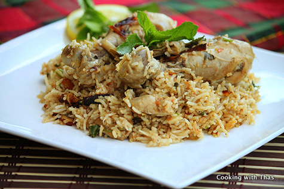

The deep flavors and piquant aromas of southern Indian cooking come to life in this recipe.
Chicken simmers in a yogurt and tomato sauce rich with herbs and spices. This recipe calls
for chicken, but you can use whatever meat you prefer. It can be a vegetarian dish, too. Just add vegetables instead of meat.
Preheat oven to 400 degrees F (200 degrees C).
Heat oil in a large oven-proof pot over medium heat. Add cardamom, clove, and cinnamon stick.
Stir in chopped onions, and fry until golden brown. Stir in garlic and ginger. Stir in chicken pieces,
and fry about 3 minutes. Stir in chili powder, and cook several minutes. Stir in tomatoes, and cook
about 5 minutes. Mix yogurt with 3 tablespoons water and lemon juice; stir into sauce.
Cover pot, and bake in a preheated oven until the sauce is somewhat thickened and concentrated, about 15 minutes.
Meanwhile, cook rice in enough salted water to cover. Bring to a boil, and cook until it is half cooked,
about 7 minutes. Drain rice, and stir into chicken and sauce. Stir in butter, season to taste with salt,
cover pot, and bake 1 hour. Stir in mint and cilantro immediately before serving.